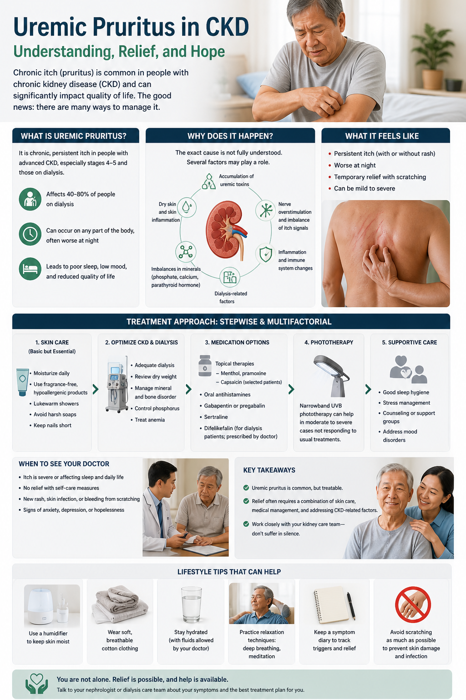

What Is Uremic Pruritus? Ano ang Uremic Pruritus? Unsa ang Uremic Pruritus? Nanung ing Uremic Pruritus?
Uremic pruritus (CKD-associated pruritus, or CKD-aP) is chronic, widespread itching caused by kidney failure itself — not just dry skin, and not fixed by ordinary moisturizers alone. The itch originates from disrupted nerve signaling, uremic toxin accumulation in skin, opioid system imbalance, and systemic inflammation. It is one of the most distressing and undertreated symptoms in all of kidney medicine. Most patients never report it, assuming nothing can help. Something can. But your doctor cannot treat what they do not know about. Ang uremic pruritus (CKD-aP) ay talamak, malawak na pangangati na dulot ng pagpalya ng bato mismo — hindi lamang tuyong balat, at hindi naaayos ng ordinaryong moisturizer lamang. Ang pangangati ay nagmumula sa nagulat na nerve signaling, akumulasyon ng uremic toxins sa balat, imbalance ng opioid system, at systemic inflammation. Karamihan ng mga pasyente ay hindi ito nai-uulat. Maaari itong gamutin. Ang uremic pruritus (CKD-aP) kronikong, halapad nga pangangati nga gidugang sa pagpalya sa kidney mismo — dili lamang uga nga panit, ug dili naayo sa ordinaryong moisturizer lamang. Kini matambalan. Apan ang imong doktor dili makatambal sa wala nila masayran. Ing uremic pruritus (CKD-aP) talamak, malawak a pangangati a dulot ning pagpalya ning batu mismo — hindi lamang tuyong balat, at hindi naaayos ning ordinaryong moisturizer lamang. Maaari itong gamutin. Ngunit ing doktor mo hindi makaagamot ning hindi nila alam.

Scratching causes dangerous infections in dialysis patientsAng pagkayod ay nagdudulot ng mapanganib na mga impeksyonAng pagkagkag nagdala sa delikadong mga impeksyonIng pagkayod nagdudulot ning mapanganib a deng impeksyon
Scratching breaks the skin and opens bacterial entry points. In immunocompromised dialysis patients, even small skin breaks can lead to cellulitis, sepsis, or dialysis access infections. This is why treating the itch — not just tolerating it — is a medical priority, not a luxury. Ang pagkayod ay nagsirasira ng balat at nagbubukas ng mga punto ng pagpasok ng bacteria. Sa mga pasyente ng dialysis, kahit maliliit na pinsala sa balat ay maaaring humantong sa cellulitis, sepsis, o impeksyon ng dialysis access. Ang pagkagkag nagsira sa panit ug nagbukas sa mga dapit nga pagsudlan sa bacteria. Sa mga pasyente sa dialysis, bisan gamay nga pinsala sa panit mahimong moresulta sa cellulitis, sepsis, o impeksyon sa dialysis access. Ing pagkayod nagsirasira ning balat at nagbubukas ning deng punto ning pagpasok ning bacteria. King deng pasyente ning dialysis, kahit maliliit a pinsala king balat maaaring humantong king cellulitis, sepsis, o impeksyon ning dialysis access.
Why Kidney Failure Causes Itching: 5 Mechanisms Bakit Nagdudulot ng Pangangati ang Pagpalya ng Bato: 5 Mekanismo Ngano nga ang Pagpalya sa Kidney Nagdala sa Pangangati: 5 Mekanismo Bakit Nagdudulot ning Pangangati ing Pagpalya ning Batu: 5 Mekanismo
Because uremic pruritus has multiple overlapping causes, no single drug works for everyone and treatment is usually stepped. Understanding why it happens helps explain why your nephrologist may try different treatments in sequence. Dahil ang uremic pruritus ay may maraming magkakapatong na sanhi, walang solong gamot ang gumagana para sa lahat at ang paggamot ay karaniwang nakasunod sa mga hakbang. Tungod kay ang uremic pruritus adunay daghang nagkakapatong nga hinungdan, walay usa ka tambal nga molihok alang sa tanan ug ang pagtambal kasagaran gisunodan ang mga lakang. Dahil ing uremic pruritus maki daramihang magkakapatong a sanhi, wala solong gamut a gumagana para king sablang at ing paggamot karaniwang sumusunod king deng hakbang.
1. Uremic Toxin Accumulation1. Akumulasyon ng Uremic Toxin1. Akumulasyon sa Uremic Toxin1. Akumulasyon ning Uremic Toxin
Middle molecules and protein-bound toxins that kidneys normally clear accumulate in skin and directly activate itch nerve fibers (pruriceptors). Better dialysis — higher-flux membranes, hemodiafiltration (HDF) — reduces but rarely eliminates this. Ang mga middle molecules at protein-bound toxins na karaniwang nilinis ng mga bato ay naipon sa balat at direktang ina-activate ang mga itch nerve fiber. Ang mas mahusay na dialysis ay nagbabawas ngunit bihirang nag-aalis nito. Ang mga middle molecules ug protein-bound toxins nga karaniwang ginalimpyohan sa mga kidney nagtipon sa panit ug direkta nga nag-activate sa mga itch nerve fiber. Ang mas maayong dialysis nagkunhod apan bihirang nakawagtang niini. Deng middle molecules at protein-bound toxins a karaniwang nilinis ning deng batu naipon king balat at direktang ina-activate deng itch nerve fiber. Ing mas maayus a dialysis nagbabawas ngunit bihirang nag-aalis niti.
2. Opioid System Imbalance2. Imbalance ng Opioid System2. Imbalance sa Opioid System2. Imbalance ning Opioid System
The body has two opposing itch receptors: mu-opioid (itch-promoting) and kappa-opioid (itch-suppressing). CKD downregulates kappa receptors, tipping the balance toward chronic itch. This is why kappa-opioid agonists like difelikefalin and nalbuphine target the root cause — and why morphine-type drugs can worsen itching. Ang katawan ay may dalawang magkasalungat na itch receptor: mu-opioid (nagtataguyod ng kati) at kappa-opioid (nagpipigil ng kati). Ang CKD ay nagbababa ng kappa receptor, nagbabagsak ng balanse. Kaya naman ang mga kappa-opioid agonist tulad ng difelikefalin at nalbuphine ay tinutugunan ang ugat ng sanhi. Ang lawas adunay duha ka magkaatbang nga itch receptor: mu-opioid (nagpataas sa kati) ug kappa-opioid (nagpugong sa kati). Ang CKD nagpaubos sa kappa receptor, nagtipas sa balanse. Mao kini ngano ang mga kappa-opioid agonist sama sa difelikefalin ug nalbuphine nag-target sa gamot nga hinungdan. Ing katawan maki adwang magkasalungat a itch receptor: mu-opioid (nagtataguyod ning kati) at kappa-opioid (nagpipigil ning kati). Ing CKD nagbababa ning kappa receptor, nagbabagsak ning balanse. Kaya naman deng kappa-opioid agonist tulad ning difelikefalin at nalbuphine tinutugunan ing ugat ning sanhi.
3. Systemic Inflammation3. Systemic na Pamamaga3. Systemic nga Pamamaga3. Systemic a Pamamaga
CKD patients have chronically elevated IL-6, IL-31, and TNF-α. IL-31 in particular directly binds skin nerve endings and drives the itch signal. High hsCRP correlates strongly with pruritus severity. Treating inflammation (through better dialysis, phosphorus control, and nutrition) partially improves itch. Ang mga pasyente ng CKD ay may talamak na nakataas na IL-6, IL-31, at TNF-α. Ang IL-31 ay direktang nagbubuklod sa mga nerve ending ng balat at nagpapatakbo ng signal ng kati. Ang mataas na hsCRP ay may matibay na kaugnayan sa kalubhaan ng pruritus. Ang mga pasyente sa CKD adunay kroniko nga natataas nga IL-6, IL-31, ug TNF-α. Ang IL-31 direkta nagbugkos sa mga nerve ending sa panit ug nagpadagan sa signal sa kati. Ang taas nga hsCRP adunay kusog nga kaugnayan sa grabe sa pruritus. Deng pasyente ning CKD maki talamak a nakataas a IL-6, IL-31, at TNF-α. Ing IL-31 direktang nagbubuklod king deng nerve ending ning balat at nagpapatakbo ning signal ning kati. Ing mataas a hsCRP maki matibay a kaugnayan king kalubhaan ning pruritus.
4. Xerosis (Dry Skin)4. Xerosis (Tuyong Balat)4. Xerosis (Uga nga Panit)4. Xerosis (Tuyong Balat)
Sweat glands atrophy in CKD, reducing natural skin moisture. Dialysis itself draws fluid from the body, drying the skin further. Dry skin lowers the itch threshold — making all other mechanisms more effective at producing itch. This is why moisturizing, while not a cure, provides meaningful relief. Ang mga sweat gland ay nag-aatrophy sa CKD, nagbabawas ng natural na kahalumigmigan ng balat. Ang tuyong balat ay nagpapababa ng threshold ng kati. Kaya naman ang moisturizing, kahit hindi lunas, ay nagbibigay ng makabuluhang ginhawa. Ang mga sweat gland nag-atrophy sa CKD, nagkunhod sa natural nga kahalumigmigan sa panit. Ang uga nga panit nagpaubos sa threshold sa kati. Mao kini ngano ang moisturizing, bisan dili tambal, naghatag sa makasabot nga ginhawa. Deng sweat gland nag-atrophy king CKD, nagbabawas ning natural a kahalumigmigan ning balat. Ing tuyong balat nagpapababa ning threshold ning kati. Kaya naman ing moisturizing, kahit hindi gamot, nagbibigay ning makabuluhang ginhawa.
5. High PTH & Phosphorus5. Mataas na PTH at Phosphorus5. Taas nga PTH ug Phosphorus5. Mataas a PTH at Phosphorus
Very high PTH and phosphorus cause calcium-phosphate deposits in skin, activating mast cells and itch pathways. This is one reason why mineral control (phosphorus binders, cinacalcet, calcitriol) can partially improve pruritus — it treats one of its actual drivers, not just symptoms. Ang napakataas na PTH at phosphorus ay nagdudulot ng calcium-phosphate deposits sa balat, nagpapagana ng mga mast cell at itch pathway. Ito ang isa sa mga dahilan kung bakit ang kontrol ng mineral ay maaaring bahagyang mapabuti ang pruritus. Ang hilabihan ka taas nga PTH ug phosphorus nagdala sa calcium-phosphate deposits sa panit, nag-activate sa mga mast cell ug itch pathway. Kini usa sa mga hinungdan ngano ang kontrol sa mineral mahimong magpauswag sa pruritus. Ing napakataas a PTH at phosphorus nagdudulot ning calcium-phosphate deposits king balat, nagpapagana ning deng mast cell at itch pathway. Iti metung sa deng dahilan kung bakit ing kontrol ning mineral maaaring bahagyang mapabuti ing pruritus.
More Than Just Itching: The Hidden Burden Higit Pa sa Pangangati: Ang Nakatagong Pabigat Labaw Pa sa Pangangati: Ang Nakatago nga Pabug-at Higit Pa sa Pangangati: Ing Nakatagong Pabigat
Sleep DestructionPagkasira ng TulogPagkalaglag sa PagtulogPagkasira ning Tulog
Uremic pruritus worsens at night. Many patients sleep only 2–4 hours, waking to scratch and then unable to return to sleep. Sleep deprivation on top of dialysis fatigue causes severe cognitive and physical decline. Sleep disruption from pruritus is an independent predictor of mortality in hemodialysis patients — not just a comfort issue. Ang uremic pruritus ay lumalala sa gabi. Maraming pasyente ay natutulog lamang ng 2–4 oras. Ang pagkukulang sa tulog ay nagdudulot ng malubhang cognitive at pisikal na pagbaba. Ang pagkagambala ng tulog mula sa pruritus ay isang independyenteng tagahula ng mortality sa mga pasyente ng HD. Ang uremic pruritus nagpalala sa gabii. Daghan ka mga pasyente natulog lamang og 2–4 ka oras. Ang pagkaguba sa pagtulog gikan sa pruritus usa ka independyenteng tagahulagway sa mortality sa mga pasyente sa HD. Ing uremic pruritus lumalala king gabi. Daramihang pasyente natutulog lamang ning 2–4 oras. Ing pagkagambala ning tulog mula king pruritus isang independyenteng tagahula ning mortality king deng pasyente ning HD.
Depression & Psychological SufferingDepresyon at Sikolohikal na PagdurusaDepresyon ug Sikolohikal nga PagduhasDepresyon at Sikolohikal a Pagdurusa
Patients with severe CKD-aP have significantly higher rates of depression and suicidal ideation than those without. The constant, invisible suffering — a symptom nobody else can see — creates a particular psychological burden. Many patients feel guilty complaining about itching compared to “bigger” kidney problems, and suffer in silence for years. This is a medical emergency when present. Ang mga pasyente na may matinding CKD-aP ay may mas mataas na rate ng depresyon at pag-iisip ng pagpapakamatay. Ang patuloy, hindi nakikitang pagdurusa ay lumilikha ng partikular na sikolohikal na pabigat. Maraming pasyente ang nag-iisip na ang pagreklamo tungkol sa pangangati ay maliit, kaya nagdurusa sila nang tahimik sa loob ng maraming taon. Ang mga pasyente nga adunay grabe nga CKD-aP adunay mas taas nga rate sa depresyon ug pag-iisip sa pagpakamatay. Ang padayon, dili makita nga pagduhas nagbuhat sa partikular nga sikolohikal nga pabug-at. Daghan ka mga pasyente nagbati og sad-an sa pag-reklamo, ug nagduhas nang hilom sulod sa daghang tuig. Deng pasyente a maki matinding CKD-aP maki mas mataas a rate ning depresyon at pag-iisip ning pagpapakamatay. Ing patuloy, hindi nakikitang pagdurusa lumilikha ning partikular a sikolohikal a pabigat. Daramihang pasyente nag-iisip na ing pagreklamo tungkol king pangangati maliit, kaya nagdurusa kela nang tahimik king loob ning daramihang taon.
Skin Care: The Foundation That Must Come First Pag-aalaga ng Balat: Ang Pundasyon na Dapat Munang Gawin Pag-atiman sa Panit: Ang Pundasyon nga Kinahanglan Unahon Pag-aalaga ning Balat: Ing Pundasyon a Dapat Unahon
✓ Do TheseGawin ItoBuhata KiniGawin Iti
- Moisturize immediately after bathing while skin is still damp — locks moisture in. Urea cream 5–10%, glycerine-based lotion, or petroleum jelly (petrolatum) twice dailyMag-moisturize kaagad pagkatapos maligo habang basa pa ang balat — pinipigilan ang kahalumigmigan. Urea cream 5–10%, glycerine lotion, o petroleum jelly nang dalawang beses bawat arawMag-moisturize dayon pagkahuman maligo samtang basa pa ang panit — nag-lock sa kahalumigmigan. Urea cream 5–10%, glycerine lotion, o petroleum jelly og kaduha matag adlawMag-moisturize agad pagkatapos maligo habang basa pa ing balat — naglo-lock ning kahalumigmigan. Urea cream 5–10%, glycerine lotion, o petroleum jelly nang adwang beses bawat araw
- Bathe with cool or lukewarm water only — heat activates itch nerve fibers directlyMaligo gamit ang malamig o mainit-init na tubig lamang — ang init ay direktang ina-activate ang mga itch nerve fiberMaligo gamit ang bugnaw o kainit-init nga tubig lamang — ang kainit direkta nag-activate sa mga itch nerve fiberMaligo gamit ing malamig o mainit-init a tubig lamang — ing init direktang ina-activate deng itch nerve fiber
- Trim fingernails short — reduces skin damage from involuntary scratching during sleepPutulin nang maikli ang mga kuko — nagbabawas ng pinsala mula sa hindi sinasadyang pagkayod habang natutulogPutla nang mubo ang mga kuko — nagkunhod sa kadaot gikan sa dili tinuyo nga pagkagkag sa panahon sa pagtulogPutulin nang maikli deng kuko — nagbabawas ning pinsala mula king hindi sinasadyang pagkayod habang natutulog
- Wear loose, soft cotton — synthetic fabrics trap heat and worsen itchMagsuot ng maluwag, malambot na cotton — ang synthetic na tela ay nagiging hadlang ng init at nagpapalala ng katiMagsul-ob og maluag, humok nga cotton — ang synthetic nga tela nagtupong sa kainit ug nagpalala sa katiMagsuot ning maluwag, malambot a cotton — ing synthetic a tela nagiging hadlang ning init at nagpapalala ning kati
- Keep bedroom cool — heat and sweating worsen nocturnal itch; use a fan or aircon at nightPanatilihing malamig ang kwarto — ang init at pagpapawis ay nagpapalala ng kati sa gabiPanahon ang kwarto nang bugnaw — ang kainit ug pagpagawas nagpalala sa kati sa gabiiPanatilihing malamig ing kwarto — ing init at pagpapawis nagpapalala ning kati king gabi
- Cotton gloves at night if you scratch involuntarily during sleep — protects skin without restricting movementCotton gloves sa gabi kung nagkakayod nang hindi sinasadya habang natutulog — pinoprotektahan ang balat nang hindi nililimitahan ang paggalawCotton gloves sa gabii kon nagkagkag ka nang dili tinuyo sa panahon sa pagtulog — nagpanalipod sa panit nga wala gililimitahan ang paglihokCotton gloves king gabi kung nagkakayod nang hindi sinasadya habang natutulog — pinoprotektahan ing balat nang hindi nililimitahan ing paggalaw
✗ Avoid TheseIwasan ItoLikayi KiniIwasan Iti
- Hot showers or baths — dramatically triggers nerve-mediated itch for hours afterwardMainit na shower o paliguan — nagtatrigger ng nerve-mediated itch sa loob ng maraming oras pagkataposMainit nga shower o paliguan — nagtrigger sa nerve-mediated itch sulod sa daghang oras pagkahumanMainit a shower o paliguan — nagtri-trigger ning nerve-mediated itch king loob ning daramihang oras pagkatapos
- Fragranced soap, body wash, or lotion — fragrances and alcohols strip skin oils and directly irritate pruriceptorsSabon, body wash, o lotion na may pabango — ang mga pabango at alkohol ay nag-aalis ng langis ng balat at direktang iinit ang mga pruriceptorSabon, body wash, o lotion nga adunay pabango — ang mga pabango ug alkohol nag-alis sa mga langis sa panit ug direkta nagpalala sa mga pruriceptorSabon, body wash, o lotion a maki pabango — deng pabango at alkohol nag-aalis ning langis ning balat at direktang nagpapainit deng pruriceptor
- Scratching with nails, hard objects, or rough cloths — breaks skin barrier, increases infection risk, and actually worsens long-term itch (scratch-inflammation cycle)Pagkayod gamit ang mga kuko, matitigas na bagay, o magaspang na tela — nagsirasira ng skin barrier, nagpapataas ng panganib ng impeksyon, at nagpapalala ng pangmatagalang katiPagkagkag gamit ang mga kuko, mga matigas nga butang, o magaspang nga panapton — nagsira sa skin barrier, nagpataas sa risgo sa impeksyon, ug nagpalala sa kati sa dugay nga panahonPagkayod gamit deng kuko, matitigas a bagay, o magaspang a tela — nagsirasira ning skin barrier, nagpapataas ning panganib ning impeksyon, at nagpapalala ning pangmatagalang kati
- Antihistamines as primary treatment — uremic pruritus is NOT primarily histamine-driven; OTC antihistamines (diphenhydramine, loratadine) provide minimal benefit at bestMga antihistamine bilang pangunahing paggamot — ang uremic pruritus ay HINDI pangunahing pinapatakbo ng histamine; ang mga OTC antihistamine ay nagbibigay ng minimal na benepisyoMga antihistamine isip pangunahing pagtambal — ang uremic pruritus DILI pangunahing gipadagan sa histamine; ang mga OTC antihistamine naghatag og minimal nga benepisyoDeng antihistamine bilang pangunahing paggamot — ing uremic pruritus HINDI pangunahing pinapatakbo ning histamine; deng OTC antihistamine nagbibigay ning minimal a benepisyo
Treatments: Stepped From Simplest to Most Targeted Mga Paggamot: Mula sa Pinaka-simple hanggang Pinaka-Tukoy Mga Pagtambal: Gikan sa Pinaka-simple hangtod Pinaka-Tukoy Deng Paggamot: Mula king Pinaka-simple anggang Pinaka-Tukoy
A 2024 meta-analysis of 91 studies (4,650 patients) found gabapentinoids are the most effective class overall for uremic pruritus, with kappa-opioid agonists (difelikefalin, nalbuphine) close behind. Treatment is stepwise — not all patients need all steps. Your nephrologist will choose based on your severity, other medications, and local availability. Isang 2024 meta-analysis ng 91 na pag-aaral (4,650 pasyente) ay natuklasan na ang mga gabapentinoid ang pinaka-epektibong klase sa kabuuan para sa uremic pruritus. Ang paggamot ay nakasunod sa mga hakbang — hindi lahat ng pasyente ay nangangailangan ng lahat ng hakbang. Usa ka 2024 meta-analysis sa 91 ka pag-aaral (4,650 ka pasyente) nakit-an nga ang mga gabapentinoid ang pinaka-epektibong klase sa kinatibuk-an alang sa uremic pruritus. Ang pagtambal gisunodan og mga lakang — dili tanan nga pasyente nagkinahanglan sa tanan nga lakang. Metung a 2024 meta-analysis ning 91 a pag-aaral (4,650 a pasyente) natuklasan na deng gabapentinoid ing pinaka-epektibong klase sa kabuuan para king uremic pruritus. Ing paggamot sumusunod king deng hakbang — hindi sablang pasyente nangangailangan ning sablang hakbang.
Optimize Dialysis & Mineral ControlI-optimize ang Dialysis at Kontrol ng MineralI-optimize ang Dialysis ug Kontrol sa MineralI-optimize ing Dialysis at Kontrol ning Mineral
Ensure spKt/V ≥1.4 at every session. Switch to high-flux membranes if not already. Hemodiafiltration (HDF) removes more middle molecules and shows superior itch reduction vs. conventional HD in multiple trials. Control phosphorus (target 3.5–5.5 mg/dL with binders) and PTH (130–600 pg/mL). Both drive CKD-aP through the mast cell and calcium-phosphate pathways. Siguraduhin ang spKt/V ≥1.4 sa bawat sesyon. Mag-switch sa high-flux membranes kung wala pa. Ang hemodiafiltration (HDF) ay nag-aalis ng mas maraming middle molecules. Kontrolin ang phosphorus (target 3.5–5.5 mg/dL) at PTH (130–600 pg/mL). Ang parehong nagpapatakbo ng CKD-aP. Sigurohon ang spKt/V ≥1.4 sa matag sesyon. Mag-switch sa high-flux membranes kon wala pa. Ang hemodiafiltration (HDF) nagkuha sa daghang middle molecules. Kontrolin ang phosphorus (target 3.5–5.5 mg/dL) ug PTH (130–600 pg/mL). Siguraduhin ing spKt/V ≥1.4 king bawat sesyon. Mag-switch king high-flux membranes kung wala pa. Ing hemodiafiltration (HDF) nag-aalis ning mas dakal a middle molecules. Kontrolin ing phosphorus (target 3.5–5.5 mg/dL) at PTH (130–600 pg/mL).
Topical TreatmentsMga Topical na PaggamotMga Topical nga PagtambalDeng Topical a Paggamot
Emollients (moisturizers) — always: Urea 5–10% cream, glycerine lotions, or petrolatum applied twice daily (after dialysis and before bed). Reduces xerosis and lowers itch threshold. Inexpensive, widely available, zero side effects. This is non-negotiable foundation care. Emollients — lagi: Urea 5–10% cream, glycerine lotion, o petrolatum na i-apply nang dalawang beses bawat araw. Nagbabawas ng xerosis at nagpapababa ng threshold ng kati. Mura, malawak na available, walang side effect. Emollients — kanunay: Urea 5–10% cream, glycerine lotion, o petrolatum nga i-apply og kaduha matag adlaw. Nagkunhod sa xerosis ug nagpaubos sa threshold sa kati. Barato, halapad nga available, walay side effect. Emollients — lagi: Urea 5–10% cream, glycerine lotions, o petrolatum a i-apply nang adwang beses bawat araw. Nagbabawas ning xerosis at nagpapababa ning threshold ning kati. Mura, malawak a available, wala side effect.
Topical tacrolimus 0.1% (Protopic) — for localized pruritus: An immunosuppressant cream that reduces local skin inflammation and itch. Apply thinly to affected areas twice daily. Do not use on infected or broken skin. Available in the Philippines. 4–6 week trial to assess response. Topical tacrolimus 0.1% (Protopic) — para sa localized pruritus: Isang immunosuppressant cream na nagbabawas ng lokal na pamamaga ng balat at kati. I-apply nang manipis sa mga apektadong lugar nang dalawang beses bawat araw. Huwag gamitin sa nahawaang o sirang balat. Available sa Pilipinas. Topical tacrolimus 0.1% (Protopic) — alang sa localized pruritus: Usa ka immunosuppressant cream nga nagkunhod sa lokal nga pamamaga sa panit ug kati. I-apply nang nipis sa mga apektadong lugar og kaduha matag adlaw. Dili gamiton sa nahawaan o nabuak nga panit. Available sa Pilipinas. Topical tacrolimus 0.1% (Protopic) — para king localized pruritus: Isang immunosuppressant cream a nagbabawas ning lokal a pamamaga ning balat at kati. I-apply nang manipis king deng apektadong lugar nang adwang beses bawat araw. Huwag gamitin king nahawaang o sirang balat. Available king Pilipinas.
Gabapentin / Pregabalin — Best Evidence Oral AgentGabapentin / Pregabalin — Pinaka-epektibong Oral na GamotGabapentin / Pregabalin — Pinaka-epektibo nga Oral nga TambalGabapentin / Pregabalin — Pinaka-epektibong Oral a Gamut
Gabapentin stabilizes overactive nerve fibers responsible for the neuropathic itch component. Dose in dialysis: 100–300 mg given AFTER each hemodialysis session (not before, not between — gabapentin is renally cleared and accumulates dangerously between sessions). Start at 100 mg post-HD, titrate up over 2–4 weeks based on response and tolerance. Available generically and inexpensively in the Philippines (Neurontin). Also helps post-HD restlessness and sleep. Gabapentin ay nagpapaayos ng mga overactive nerve fiber na responsable sa neuropathic itch component. Dosis sa dialysis: 100–300 mg pagkatapos ng bawat sesyon ng HD (hindi bago, hindi sa pagitan). Magsimula sa 100 mg post-HD, i-titrate pataas sa loob ng 2–4 na linggo. Available sa Pilipinas (Neurontin). Nakakatulong din sa pagkamahirap matulog pagkatapos ng HD. Gabapentin nag-stabilize sa mga overactive nerve fiber nga responsable sa neuropathic itch component. Dosis sa dialysis: 100–300 mg pagkahuman sa matag sesyon sa HD (dili sa wala pa, dili tali). Magsugod sa 100 mg post-HD, i-titrate pataas sulod sa 2–4 ka semana. Available sa Pilipinas (Neurontin). Nakatulong usab sa post-HD restlessness ug pagtulog. Gabapentin nag-stabilize ning deng overactive nerve fiber a responsable king neuropathic itch component. Dosis king dialysis: 100–300 mg pagkatapos ning bawat sesyon ning HD (hindi bago, hindi sa pagtali). Magsimula king 100 mg post-HD, i-titrate pataas king loob ning 2–4 a linggo. Available king Pilipinas (Neurontin). Nakakatulong din king post-HD restlessness at tulog.
Caution: Causes sedation and dizziness, especially in elderly patients. Start low, go slow. Never use the full doses used for non-dialysis patients — gabapentin accumulates severely in kidney failure if not dose-adjusted. Pregabalin (Lyrica) 25–50 mg post-HD is an alternative with similar mechanism. Pag-iingat: Nagdudulot ng antok at pagkahilo, lalo na sa mga matatandang pasyente. Magsimula sa maliit, dahan-dahang tumaas. Huwag gamitin ang buong dosis na ginagamit para sa mga pasyente na hindi nasa dialysis — ang gabapentin ay mabilis na naipon sa pagpalya ng bato kung hindi naaayos ang dosis. Pagbantay: Nagdala sa pagkatulog ug pagkahilo, ilabi na sa mga tigulang. Magsugod og ubos, hinay-hinay motaas. Dili gamiton ang tibuok nga dosis nga gigamit alang sa mga pasyente nga wala sa dialysis — ang gabapentin mabilis nagtipon sa pagpalya sa kidney kon dili naadjust ang dosis. Pag-iingat: Nagdudulot ning antok at pagkahilo, lalu na king deng matatandang pasyente. Magsimula king maliit, dahan-dahan tumaas. Huwag gamitin ing buong dosis a ginagamit para king deng pasyente a hindi nasa dialysis — ing gabapentin mabilis naipon king pagpalya ning batu kung hindi naadjust ing dosis.
Nalbuphine — Kappa-Opioid Agonist (Oral)Nalbuphine — Kappa-Opioid Agonist (Oral)Nalbuphine — Kappa-Opioid Agonist (Oral)Nalbuphine — Kappa-Opioid Agonist (Oral)
Nalbuphine is a mixed opioid agonist-antagonist: it blocks mu receptors (itch-promoting) while activating kappa receptors (itch-suppressing), correcting the opioid imbalance of CKD-aP at its source. Clinical trials show meaningful itch reduction. Available in the Philippines as an oral formulation. Side effects include sedation and dizziness. Useful for moderate-severe pruritus not adequately controlled by gabapentin alone. Ang nalbuphine ay isang mixed opioid agonist-antagonist: nagba-block ng mu receptors (nagtataguyod ng kati) habang ina-activate ang kappa receptors (nagpipigil ng kati), nagwawasto ng opioid imbalance ng CKD-aP sa pinagmumulan nito. Nagpapakita ng makabuluhang pagbabawas ng kati sa mga clinical trial. Available sa Pilipinas bilang oral formulation. Ang nalbuphine usa ka mixed opioid agonist-antagonist: nagbabag sa mu receptors (nagpataas sa kati) samtang nag-activate sa kappa receptors (nagpugong sa kati), nagpwesto sa opioid imbalance sa CKD-aP sa pinagmulang. Nagpakita sa makasabot nga pagkunhod sa kati sa mga clinical trial. Available sa Pilipinas isip oral formulation. Ing nalbuphine isang mixed opioid agonist-antagonist: nagba-block ning mu receptors (nagtataguyod ning kati) habang ina-activate ing kappa receptors (nagpipigil ning kati), nagwawasto ning opioid imbalance ning CKD-aP king pinagmumulan niti. Available king Pilipinas bilang oral formulation.
Difelikefalin (IV) & Narrowband UVB — Advanced OptionsDifelikefalin (IV) at Narrowband UVB — Mga Advanced na OpsyonDifelikefalin (IV) ug Narrowband UVB — Mga Advanced nga OpsyonDifelikefalin (IV) at Narrowband UVB — Deng Advanced a Opsyon
Difelikefalin (Korsuva, IV): FDA-approved in 2021 specifically for hemodialysis patients with CKD-aP. A highly selective peripherally-acting kappa-opioid agonist given IV after each HD session. Proven effective in Phase 3 trials. Advantage over nalbuphine: minimal CNS effects (does not cross the blood-brain barrier), so less sedation. Not yet routinely available in the Philippines — ask your nephrologist about access programs. Difelikefalin (Korsuva, IV): Inaaprubahan ng FDA noong 2021 espesipiko para sa mga pasyente ng hemodialysis na may CKD-aP. Isang highly selective peripherally-acting kappa-opioid agonist na ibinibigay ng IV pagkatapos ng bawat sesyon ng HD. Napatunayan na epektibo sa mga Phase 3 trial. Hindi pa karaniwang available sa Pilipinas. Difelikefalin (Korsuva, IV): FDA-approved niadtong 2021 espesipiko alang sa mga pasyente sa hemodialysis nga adunay CKD-aP. Usa ka highly selective peripherally-acting kappa-opioid agonist nga gihatag IV pagkahuman sa matag sesyon sa HD. Dili pa kasagaran available sa Pilipinas. Difelikefalin (Korsuva, IV): FDA-approved noong 2021 espesipiko para king deng pasyente ning hemodialysis a maki CKD-aP. Isang highly selective peripherally-acting kappa-opioid agonist a ibinibigay IV pagkatapos ning bawat sesyon ning HD. Hindi pa karaniwang available king Pilipinas.
Narrowband UVB phototherapy: 3x weekly supervised ultraviolet light treatment for 6–8 weeks in a dermatology clinic. Reduces skin inflammation and normalizes nerve fiber density. Effective for widespread pruritus. Limited availability in the Philippines — available at some academic medical centers. Worth asking about for patients with severe, refractory CKD-aP. Narrowband UVB phototherapy: Supervised na paggamot gamit ang ultraviolet light nang 3 beses sa isang linggo para sa 6–8 linggo sa isang dermatology clinic. Nagbabawas ng pamamaga ng balat at nagno-normalize ng density ng nerve fiber. Limitadong availability sa Pilipinas. Narrowband UVB phototherapy: Supervised nga pagtambal gamit ang ultraviolet light nang 3 ka beses sa usa ka semana alang sa 6–8 semana sa usa ka dermatology clinic. Nagkunhod sa pamamaga sa panit ug nag-normalize sa density sa nerve fiber. Limitado nga availability sa Pilipinas. Narrowband UVB phototherapy: Supervised a paggamot gamit ing ultraviolet light nang 3 beses king metung a linggo para king 6–8 linggo king metung a dermatology clinic. Nagbabawas ning pamamaga ning balat at nag-normalize ning density ning nerve fiber. Limitadong availability king Pilipinas.
Why antihistamines usually don’t work for uremic pruritusBakit karaniwang hindi gumagana ang mga antihistamine para sa uremic pruritusNgano nga kasagaran dili kini molihok ang mga antihistamine alang sa uremic pruritusBakit karaniwang hindi gumagana deng antihistamine para king uremic pruritus
OTC antihistamines (diphenhydramine, loratadine, cetirizine) block histamine — but uremic pruritus is NOT primarily histamine-driven. They may help slightly through sedation (breaking the itch-scratch-wake cycle at night), but they do not address the nerve, opioid, or inflammatory mechanisms that drive CKD-aP. Do not rely on antihistamines as your primary treatment. Tell your nephrologist you are suffering and ask about the treatments above. Ang mga OTC antihistamine ay nagba-block ng histamine — ngunit ang uremic pruritus ay HINDI pangunahing pinapatakbo ng histamine. Maaari silang makatulong nang kaunti sa pamamagitan ng sedation, ngunit hindi nila tinutugunan ang mga nerve, opioid, o inflammatory na mekanismo. Huwag umasa sa mga antihistamine bilang pangunahing paggamot. Ang mga OTC antihistamine nagbabag sa histamine — apan ang uremic pruritus DILI pangunahing gipadagan sa histamine. Mahimong makatabang kini nang gamay pinaagi sa sedation, apan dili nila gi-address ang mga nerve, opioid, o inflammatory nga mekanismo. Dili isalig ang mga antihistamine isip imong pangunahing pagtambal. Deng OTC antihistamine nagba-block ning histamine — ngunit ing uremic pruritus HINDI pangunahing pinapatakbo ning histamine. Maaaring makatulong kela nang kaunti sa pamamagitan ning sedation, ngunit hindi kela tinutugunan deng nerve, opioid, o inflammatory a mekanismo. Huwag umasa king deng antihistamine bilang pangunahing paggamot.
Tell Your Doctor. You Do Not Have to Suffer in Silence. Sabihin sa Iyong Doktor. Hindi Mo Kailangang Magdusa nang Tahimik. Sultihi ang Imong Doktor. Dili Kinahanglan Magduhas nang Hilom. Sabihin king Doktor Mo. Hindi Mo Kailangan Magdusa nang Tahimik.
Most Filipino dialysis patients with uremic pruritus do not report it — either because they assume it is untreatable, or because they feel guilty prioritizing a symptom like itching over their “more serious” kidney problems. Both assumptions are wrong. Uremic pruritus is treatable, and undertreating it leads to sleep deprivation, depression, skin infections, and worse survival outcomes. At your next clinic visit, please tell your nephrologist the following: Karamihan ng mga Pilipinong pasyente ng dialysis na may uremic pruritus ay hindi ito nai-uulat — alinman dahil nag-iisip silang hindi ito maaaring gamutin, o dahil nagkukumpali silang unahin ang isang sintomas tulad ng pangangati kaysa sa kanilang “mas seryoso” na mga problema sa bato. Ang parehong mga palagay ay mali. Ang uremic pruritus ay maaaring gamutin. Kadaghanan sa mga Pilipinong pasyente sa dialysis nga adunay uremic pruritus wala kini nag-report — alinman tungod nagtuo sila nga kini dili matambalan, o tungod nagbati sila og sad-an sa pag-prioritize sa usa ka sintomas sama sa pangangati kaysa sa ilang “mas seryoso” nga mga problema sa kidney. Ang duha ka panghunahuna sayop. Ang uremic pruritus matambalan. Karamihan ning deng Pilipinong pasyente ning dialysis a maki uremic pruritus hindi iti nai-uulat — alinman dahil nag-iisip kela na hindi iti maaaring gamutin, o dahil nagkukumpali kela unahin ing isang sintomas tulad ning pangangati kaysa king deng “mas seryoso” a deng problema king batu. Ang parehong deng palagay mali. Ing uremic pruritus maaaring gamutin.
What to Tell Your Nephrologist at Your Next Visit Ano ang Sasabihin sa Iyong Nephrologist sa Susunod na Pagbisita Unsa ang Isulti sa Imong Nephrologist sa Sunod nga Pagbisita Nanung Sasabihin king Nephrologist Mo king Susunod a Pagbisita
- Where on your body the itching occurs (back, arms, legs, whole body — or localized?)Saan sa iyong katawan nangyayari ang pangangati (likod, braso, binti, buong katawan — o isang lugar lamang?)Asa sa imong lawas nahitabo ang pangangati (likod, bukton, bitiis, tibuok lawas — o usa lamang ka lugar?)Nanu king katawan mo nangyayari ing pangangati (likod, braso, binti, buong katawan — o isang lugar lamang?)
- Severity on a 0–10 scale (0 = no itch, 10 = worst imaginable)Kalubhaan sa sukat na 0–10 (0 = walang kati, 10 = pinakamalubha na mairerehistro)Grabe sa sukat nga 0–10 (0 = walay kati, 10 = pinakagrabe nga mahuna-hunaan)Kalubhaan king sukat ning 0–10 (0 = wala pang kati, 10 = pinakamalubha a mairerehistro)
- Whether it is worse at night, after dialysis, or after bathingKung mas malala ito sa gabi, pagkatapos ng dialysis, o pagkatapos maligoKon mas grabe ba kini sa gabii, human sa dialysis, o human maligoKung mas malala iti king gabi, pagkatapos ning dialysis, o pagkatapos maligo
- How many hours of sleep you are actually getting per nightIlang oras ng tulog ang aktwal mong nakukuha bawat gabiPila ka oras sa pagtulog ang imong tinuod nga nakuha matag gabiiIlang oras ning tulog ing aktwal mong nakukuha bawat gabi
- Whether it is affecting your mood or your willingness to attend dialysisKung nakakaapekto ito sa iyong mood o sa iyong kagustuhang pumunta sa dialysisKon nakaapekto ba kini sa imong mood o sa imong kagustong mopunta sa dialysisKung nakakaapekto iti king mood mo o king kagustuhan mong pumunta king dialysis

W. G. M. Rivero, MD, FPCP, DPSN
Specialist in Internal Medicine, Nephrology, and Clinical Nutrition. Uremic pruritus is one of the most underreported and undertreated symptoms in Filipino nephrology. I ask about it at every dialysis review because fewer than one in three patients bring it up on their own. If you have been itching and have not mentioned it — please do at your next visit. You deserve to sleep through the night. Effective treatments exist. Espesyalista sa Panloob na Medisina, Nefrolohiya, at Klinikal na Nutrisyon. Ang uremic pruritus ay isa sa mga pinaka-kulang na nai-uulat at pinaka-kulang na nagagamot na mga sintomas sa Pilipinong nefrolohiya. Tinatanong ko ito sa bawat dialysis review dahil wala pang isa sa tatlong pasyente ang nagdadala nito sa sarili nila. Kung nagkakati ka at hindi mo pa ito binanggit — mangyaring gawin ito sa susunod mong pagbisita. Espesyalista sa Internal nga Medisina, Nefrolohiya, ug Klinikal nga Nutrisyon. Ang uremic pruritus usa sa pinakakulang nga gi-report ug pinakakulang nga gitambalan nga mga sintomas sa Pilipinong nefrolohiya. Nagpangutana ko niini sa matag dialysis review tungod wala pa ang usa sa tulo ka mga pasyente ang nagdala niini sa ilang kaugalingon. Espesyalista king Panloob a Medisina, Nefrolohiya, at Klinikal a Nutrisyon. Ing uremic pruritus metung sa pinaka-kulang a nai-uulat at pinaka-kulang a nagagamot a deng sintomas king Pilipinong nefrolohiya. Tinatanong ku iti king bawat dialysis review dahil wala pa metung king tatlong pasyente ing nagdadala niti king sarili nila.
PRC 0105184 · seriousmd.com/doc/williamrivero ·